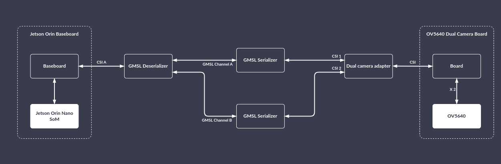
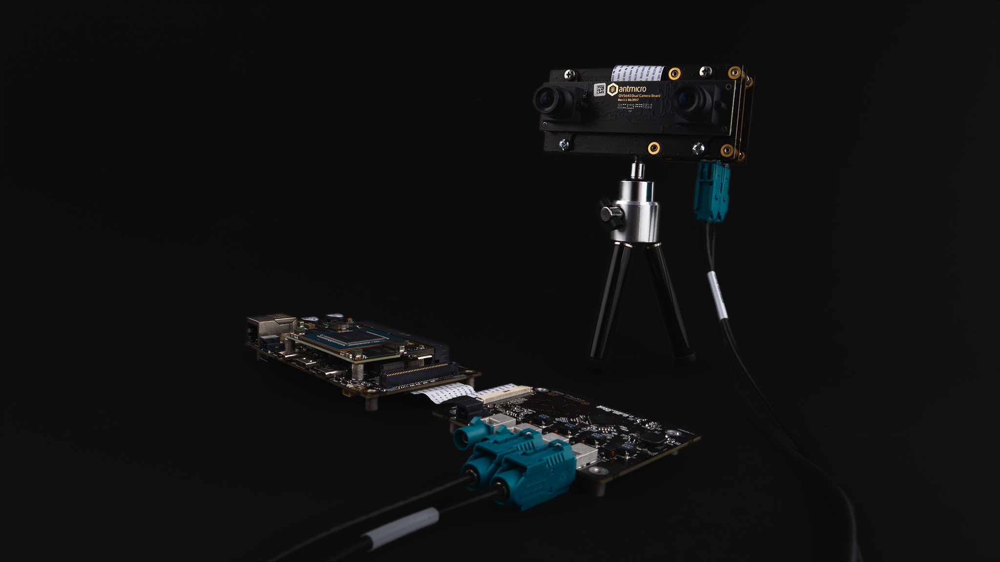
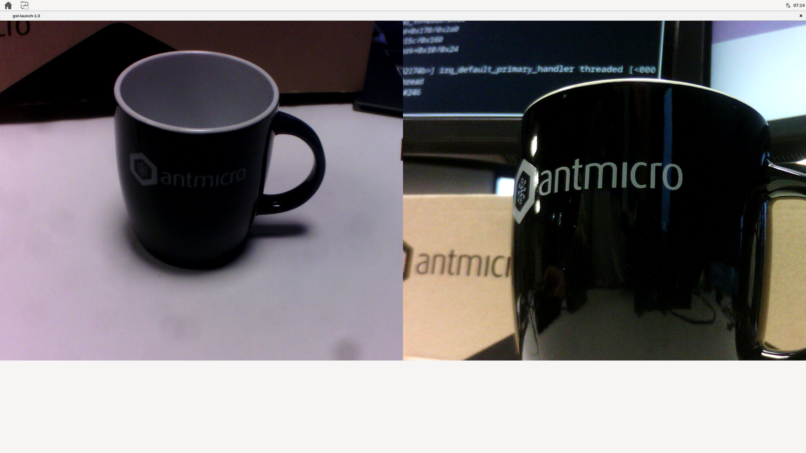

GMSL¶
This manual will guide you through the setup of the open hardware GMSL Deserializer and Serializer boards together with Jetson Orin Baseboard. It describes the basic steps required to run a simple demo that captures feed from the connected OV5640 sensor.
Collect the hardware¶
You’ll need the following hardware:
Antmicro Dual Camera to GMSL Serializer CSI Adapter (optional, for two camera setup)
NVMe drive
Power supplies (for GMSL Deserializer it can be the same as for the Jetson Orin Baseboard)
Build your setup¶
Prerequisites¶
First follow the steps in Getting Started to have a running Jetson Orin Baseboard ready.
Steps¶

To prepare the Jetson Orin Baseboard for GMSL usage, connect the hardware like in the diagram above, that is:
Connect GMSL Deserializer to Jetson Orin Baseboard on CSI A
Connect GMSL Serializer #1 to GMSL Deserializer on Channel A
Connect GMSL Serializer #2 to GMSL Deserializer on Channel B
Connect GMSL Serializer #1 to the dual camera adapter
Connect GMSL Serializer #2 to the dual camera adapter
Connect OV5640 Dual Camera Board to the dual camera adapter
Plug in the power supply to the GMSL Deserializer
Power on the Jetson Orin Baseboard
This is how the setup should look after everything has been connected:

Flash the BSP image¶
Flash the image using this BSP. First, pull the code:
mkdir gmsl-demo && cd gmsl-demo
$ repo init -u https://github.com/antmicro/meta-antmicro.git -m system-releases/nvidia-jetson-orin-baseboard-demo/manifest.xml
$ repo sync -j`nproc`
Build the BSP:
$ source sources/poky/oe-init-build-env
$ export BB_ENV_PASSTHROUGH_ADDITIONS="$BB_ENV_PASSTHROUGH_ADDITIONS KERNEL_DEVICETREE"
$ PARALLEL_MAKE="-j $(nproc)" BB_NUMBER_THREADS="$(nproc)" MACHINE="p3509-a02-p3767-0000" KERNEL_DEVICETREE="tegra234-p3767-0003-antmicro-job-gmsl-ov5640.dtb" bitbake nvidia-jetson-orin-baseboard-demo
After the BSP has been built, connect the NVMe storage to the device and put the device into recovery mode:
Connect the Recovery USB-C port to the host PC
Press the POWER button (if the device isn’t powered yet)
Press and hold the RECOV button
Press the RESET button
Release the RESET and RECOV buttons
Check if the following USB device is present on your host PC:
$ lsusb
...
ID 0955:7323 NVIDIA Corp. APX
...
Unpack the tegraflash package:
cd tmp/deploy/images/p3509-a02-p3767-0000
mkdir flash-directory && cd flash-directory
tar xzvf ../nvidia-jetson-orin-baseboard-demo-p3509-a02-p3767-0000.tegraflash.tar.gz
Flash it:
sudo ./initrd-flash
Run the following command on the device to verify that the GMSL hardware was detected:
$ media-ctl -p
It’s output should reflect the GMSL devices’ topology:
...
- entity 1: nvcsi0 (2 pads, 2 links)
type V4L2 subdev subtype Unknown flags 0
device node name /dev/v4l-subdev0
pad0: Sink
<- "des_ch_0":0 [ENABLED]
pad1: Source
-> "vi-output, ov5640 21-003c":0 [ENABLED]
- entity 4: nvcsi1 (2 pads, 2 links)
type V4L2 subdev subtype Unknown flags 0
device node name /dev/v4l-subdev1
pad0: Sink
<- "des_ch_1":0 [ENABLED]
pad1: Source
-> "vi-output, ov5640 23-003c":0 [ENABLED]
- entity 7: ser_0_ch_0 (2 pads, 2 links)
type V4L2 subdev subtype Unknown flags 0
device node name /dev/v4l-subdev2
pad0: Source
[fmt:FIXED/0x0]
-> "des_ch_0":1 [ENABLED]
pad1: Sink
[fmt:YUYV8_1X16/0x0]
<- "ov5640 21-003c":0 [ENABLED]
- entity 10: ser_1_ch_0 (2 pads, 2 links)
type V4L2 subdev subtype Unknown flags 0
device node name /dev/v4l-subdev3
pad0: Source
[fmt:FIXED/0x0]
-> "des_ch_1":1 [ENABLED]
pad1: Sink
[fmt:YUYV8_1X16/0x0]
<- "ov5640 23-003c":0 [ENABLED]
- entity 13: des_ch_0 (2 pads, 2 links)
type V4L2 subdev subtype Unknown flags 0
device node name /dev/v4l-subdev4
pad0: Source
[fmt:YUYV8_1X16/0x0]
-> "nvcsi0":0 [ENABLED]
pad1: Sink
[fmt:FIXED/0x0]
<- "ser_0_ch_0":0 [ENABLED]
- entity 16: des_ch_1 (2 pads, 2 links)
type V4L2 subdev subtype Unknown flags 0
device node name /dev/v4l-subdev5
pad0: Source
[fmt:YUYV8_1X16/0x0]
-> "nvcsi1":0 [ENABLED]
pad1: Sink
[fmt:FIXED/0x0]
<- "ser_1_ch_0":0 [ENABLED]
- entity 19: ov5640 21-003c (1 pad, 1 link)
type V4L2 subdev subtype Sensor flags 0
device node name /dev/v4l-subdev6
pad0: Source
[fmt:UYVY8_1X16/1920x1080 field:none colorspace:srgb]
-> "ser_0_ch_0":1 [ENABLED]
- entity 21: vi-output, ov5640 21-003c (1 pad, 1 link)
type Node subtype V4L flags 0
device node name /dev/video0
pad0: Sink
<- "nvcsi0":1 [ENABLED]
- entity 47: ov5640 23-003c (1 pad, 1 link)
type V4L2 subdev subtype Sensor flags 0
device node name /dev/v4l-subdev7
pad0: Source
[fmt:UYVY8_1X16/1920x1080 field:none colorspace:srgb]
-> "ser_1_ch_0":1 [ENABLED]
- entity 49: vi-output, ov5640 23-003c (1 pad, 1 link)
type Node subtype V4L flags 0
device node name /dev/video1
pad0: Sink
<- "nvcsi1":1 [ENABLED]
Capturing streams¶
Setting up formats¶
Deserializer and serializer need to be informed what packet types to forward, otherwise all packets will be filtered:
# first stream
media-ctl -d /dev/media0 --set-v4l2 '"ser_0_ch_0":1[fmt:YUYV8_1X16/1920x1080]'
media-ctl -d /dev/media0 --set-v4l2 '"des_ch_0":0[fmt:YUYV8_1X16/1920x1080]'
# second stream
media-ctl -d /dev/media0 --set-v4l2 '"ser_1_ch_0":1[fmt:YUYV8_1X16/1920x1080]'
media-ctl -d /dev/media0 --set-v4l2 '"des_ch_1":0[fmt:YUYV8_1X16/1920x1080]'
Capturing frames¶
To capture a given number of frames from the camera just run:
v4l2-ctl -d<camera_number> --stream-mmap --stream-count=<number_of_frames> --stream-to=cam0_image.raw
Or use GStreamer:
gst-launch-1.0 v4l2src device=<camera_device> num-buffers=<number_of_frames> ! filesink location=cam0_image.raw
For OV5640 number of frames should be > 3, since OV5640 needs a few frames to roll out before the stream stabilizes.
Live video feed¶
This requires Jetson Orin Baseboard to be connected to some screen via HDMI. To stream the feed from a camera to an X11 window:
gst-launch-1.0 v4l2src device=<camera_device> ! xvimagesink
To capture two feeds simultaneously:
gst-launch-1.0 \
v4l2src device=/dev/video1 ! \
compositor name=mix sink_0::xpos=0 sink_0::ypos=0 sink_1::xpos=1280 sink_1::ypos=0 ! \
videoconvert ! autovideosink \
v4l2src device=/dev/video0 ! \
mix.
Example images captured with the setup¶
